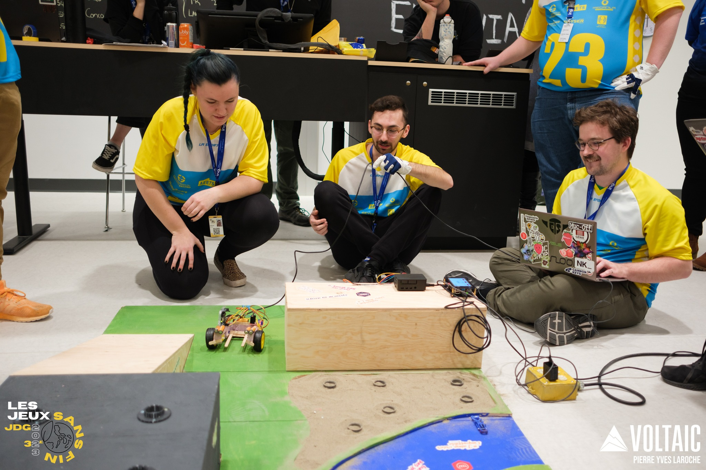
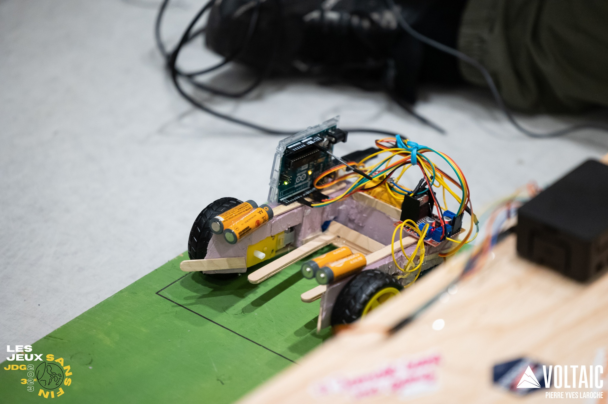

Engineering Games 2023
The Engineering Games is an annual multidisciplinary competition bringing together students from 12 universities across Quebec.
In 2023, I participated in three challenges: Machine, Major, and Electrical Academic.
I was part of a 36-person delegation representing ÉTS.
My main responsibility was leading the electrical and software team for the Machine challenge, while also contributing to the electrical design of the Major challenge.
I also competed in the practical segment of the Electrical Academic challenge, where I achieved 1st place.
Machine Challenge
The Machine Challenge is a four-month robotics design competition. In 2023, teams had to design and build a robot capable of connecting and crossing a series of islands using bridges distributed across the field.
As the electrical and software team lead, I was responsible for coordinating the development of the robot's electrical and software systems. This involved making technical decisions, coordinating tasks within the team, and integrating the electrical and software components with the rest of the robot.

Major Challenge
The Major Challenge is an eight-hour robotics competition in which teams must rapidly design and build a robot using a common set of limited materials.
The 2023 challenge required robots to place tickets at different locations on a field. My main responsibility was to design and build the electrical circuit for the prototype under the competition's time and material constraints.

Electrical Academic Challenge
The Electrical Academic Challenge consists of two four-hour segments: a theoretical competition and a practical engineering challenge.
I participated in the practical segment, where a team of two had to design and build an electrical circuit using the equipment provided. In 2023, the challenge was to build a functional multimeter from the available components and equipment.
I achieved 1st place in the practical segment of the Electrical Academic Challenge.
Technologies
Language :
- C/C++
Software & Ressources :
- Arduino IDE